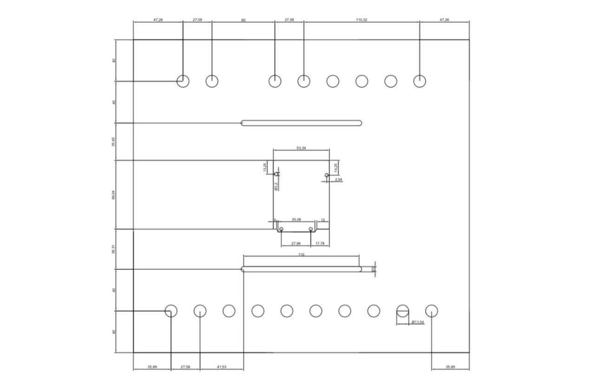

¿Qué es un PLC?
Un PLC (Controlador Lógico Programable) es un dispositivo electrónico diseñado para automatizar procesos industriales mediante la recepción de señales de entrada, su procesamiento y la emisión de señales de salida para controlar diversos equipos. Su principal característica es la capacidad de ser programado para ejecutar secuencias lógicas, adaptándose a las necesidades específicas de un sistema automatizado

PLC VS ARDUINO
Los PLCs son herramientas estándar en la industria por su robustez y especialización, Arduino ofrece una alternativa accesible para fines educativos. Usar un Arduino con un PLC Shield permite introducir a los estudiantes en conceptos de automatización, simulando aplicaciones industriales a menor escala y costo.

Usa un PLC si:
- -Trabajas en un entorno industrial.
- -Necesitas alta confiabilidad, escalabilidad y soporte para protocolos industriales.
- -Estás controlando maquinaria crítica o procesos en tiempo real.
- -Estás desarrollando un prototipo, proyecto educativo o personal.
- -Tienes un presupuesto limitado.
- -No necesitas cumplir con estándares industriales.
Nombre del módulo: "PLC Control Shield Arduino"
Este módulo didáctico está diseñado para introducir a los estudiantes en el aprendizaje de automatización industrial, utilizando herramientas accesibles y prácticas. El sistema simula el funcionamiento básico de un PLC mediante el uso de un Arduino UNO R3 combinado con un PLC Control Shield, facilitando la comprensión de conceptos clave como entradas, salidas y programación lógica
Componentes principales
Algunos de los componentes ocupados para la realización de este proyecto fueron:
1.PLC Control Shield Arduino (6 entradas, 5 salidas) >/p>
- -Este shield se conecta directamente al Arduino y amplía su capacidad para controlar
sistemas automatizados básicos.
- -Entradas: Se utilizan para recibir señales de sensores o interruptores.
- Salidas: Permiten controlar actuadores como luces, motores o relevadores.
Ventajas:
- -Simplifica las conexiones al integrar entradas y salidas configuradas específicamente
para aplicaciones de control.
- - Compatible con proyectos educativos y prototipos industriales.
2. Conectores banana de seguridad (hembra) 4mm
Función: Facilitan la conexión de componentes eléctricos de forma segura y ordenada.
Características:
- -Estándar de seguridad para evitar cortocircuitos o accidentes
eléctricos.
- -Conexión rápida y confiable con cables de prueba.
- -Compatible con equipos educativos e industriales.
3. Interruptor SPST (Single Pole Single Throw)
- -Uso: Control básico de encendido y apagado de circuitos eléctricos.
- -Características:
- -Actúa como una entrada para el sistema, simulando señales
provenientes de botones o sensores.
- -Diseño simple y eficiente para experimentos básicos de automatización.
- -Ejemplo: Controlar el encendido de una lámpara o motor a través de una
señal lógica.
4.Arduino UNO R3 (Revisión 3)
Ventajas y características:
- -Microcontrolador ATmega328P.
- -Compatible con una amplia gama de sensores y
actuadores.
- -Programable en Arduino IDE, un entorno amigable
para estudiantes.
- -Alimentación flexible: USB o fuente externa de 7
12V.
- - Uso en el módulo: Sirve como el cerebro del sistema,
procesando las señales de entrada y ejecutando las
órdenes programadas para las salidas.
Funcionamiento general
Interconexión de los componentes:
- -El Arduino UNO R3 se conecta al PLC Control Shield, que a su vez recibe señales de los
interruptores SPST o sensores mediante los conectores banana.
- -Los cables calibre 20 THW se utilizan para conectar de manera segura todos los elementos.
- -Las salidas del shield controlan actuadores como LEDs, motores o relevadores.
Conexión:
- -El interruptor se conecta a una entrada digital del shield.
- -El LED se conecta a una salida digital del shield.
Programación en Arduino IDE:
- -Se configura el pin del interruptor como entrada y el pin del LED como salida.
- -El programa detecta el estado del interruptor y activa o desactiva el LED en consecuencia.